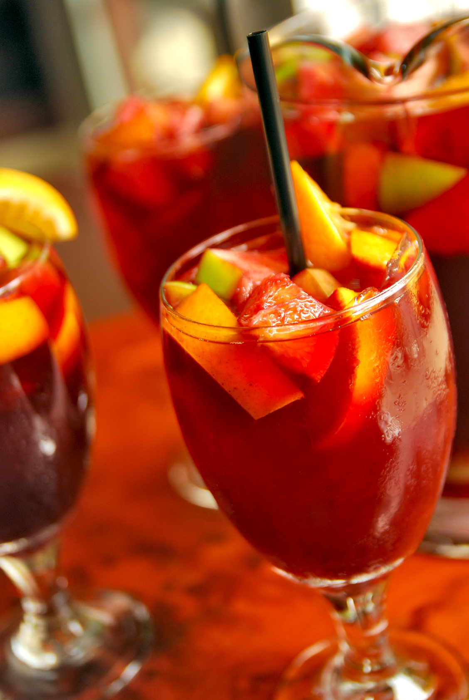

Cócteles orgánicos: ideas energizantes, antioxidantes y desintoxicantes | Bacanal
- Apple Fresh un cocktail que anima y revitaliza totalmente
- 20 ideas de COCKTAILS | cocteles, té helado long island, tragos
- Apple Fresh un cocktail que revitaliza | Receta | Jugo de .
- Recetas de bebidas, cócteles e infusiones - Lecturas
- 3 recetas de cócteles con té | Blog de TEASHOP
- 10 tragos veraniegos fáciles de hacer para combatir el calor .
- Cócteles orgánicos: ideas energizantes, antioxidantes y .
- Coctel de cafe, el mejor revitalizante para una noche
- Coctel de café, el mejor revitalizante de la noche. Conócelo
- Conviértete en el rey de los cócteles con estas aplicaciones

Publicidad Bajar al sitio X Friday 18.06.2021 | Home Foodie Cocinar Cocineros Comer Afuera Gastronomía Recetas Restos Vinos y Barras Bares y Tragos Beer Vinos Wine News Ver y Leer Cine y Series Literatura Música Estilo Columnistas Entrevistas Moda Narciso Autos Tecno Next Next Agenda Trip Conocer Territorios Viajero Bacanal X-Tremo Seleccionar página Bares y Tragos
Cócteles orgánicos: ideas energizantes, antioxidantes y desintoxicantes
Te proponemos saber qué son los cócteles orgánicos y porqué se convirtieron en una opción ideal para incorporarlos diariamente.
Primero fue la comida y ahora los cócteles orgánicos . Aunque estas recetas para preparar tragos orgánicos no son ideas originales ni mucho menos nuevas, es una preparación que utiliza ingredientes naturales que está ganando grandes aficionados.
Son tragos perfectos para superar el calor.Los cócteles orgánicos son tragos que se preparan con ingredientes naturales o que utilizan en su elaboración diversos elementos naturales .
ALGUNAS OPCIONES -JUGOS : (Para un gran vaso)
1.- ENERGETIC GREEN BOOSTER- Un concentrado de efecto potenciador de la energía. Idóneo para empezar la mañana con fuerza y bienestar.
1 puñado de espinacas – 1 pepino
3 ramas de apio
1 manzana
1?2 limón
1 cm de jengibre
2.- ANTIOX BEAUTY-VITAMINS- Un aliado de la piel súper antioxidante por su gran concentración en vitamina A y betacaroteno.
3 zanahorias
2 naranjas
1?2 lima
-1 cm de jengibre
3.- VITALITY COCKTAIL- Una receta revitalizante que ayuda a combatir el cansancio, y los bajones.
2 remolachas
1 zanahoria
3 ramas de apio
1 naranja
1 limón
Varias hojas de menta fresca.
4.- DETOX- Para potenciar la eliminación de las toxinas.
½ apio (diurético), ½ limón, una cucharadita de espirulina o 2 zanahorias, el jugo de una naranja, col roja (previene el cáncer y da un color muy bonito), y bayas de açai.
Preparación : Meter todos los ingredientes, cortados en trocitos, sin pelar y con sus pepitas, en un extractor de jugo en frío.
BATIDOS (Para un gran vaso)
1.- TROPICAL- Súper anti-inflamatorio e ideal tras la práctica deportiva.
2 tazas de leche de almendras (o de agua)
1?2 banana
2 tazas de piña troceada
1?4 de jugo de lima
1 dátil deshuesado.
Preparación : Poner en la licuadora, en primer lugar, la leche de almendra y la piña troceada. A continuación, agregar el plátano, el jugo de lima y el dátil.
2.- THE BIG GREEN- Nutritivo y refrescante, equivale a un desayuno completo por su importante aporte de vitaminas de las verduras y de ácidos grasos esenciales del aguacate.
-1 taza de agua
2 tazas de espinacas
2 tazas de mango en trozos
1 taza de piña en trozos
1?2 palta
Preparación : Comenzar añadiendo el agua y las espinacas. Cuando están mezcladas, incorporar el mango y la piña, volver a batir, añadir la palta y realizar la última mezcla.
3.- KIWI-TANGO- Idóneo como snack en los meses de frío porque su gran aporte de vitamina C ayuda a potenciar las defensas.
-1 taza de espinacas
1 taza de agua
1?2 taza de mango troceado – 1?2 taza de piña en trozos
1 kiwi
Preparación : Poner el agua y las espinacas. Mezclar bien. Agregar el mango, la piña y el kiwi y mezclar de nuevo
Bares y TragosRecetas otoñales con papa
Bares y TragosDelicado y fácil: Rosas de Hojaldre de Jamón y Queso
Bares y TragosBudín de frutos rojos tipo summer
Contacto Contacto Comercial Autos Bares y Tragos Cine y Series Cocineros Entrevistas Gastronomía Literatura Música Moda Narciso Next Tecno Territorios Viajero Bacanal Wine News X-Tremo Restos Vinos Todos los derechos reservados. Metromedia.Cap. Gral. R. Freire 932, Ciudad Autónoma de Buenos Aires, Argentina. MENU Home Foodie Cocinar Cocineros Comer Afuera Gastronomía Recetas Restos Vinos y Barras Bares y Tragos Beer Vinos Wine News Ver y Leer Cine y Series Literatura Música Estilo Columnistas Entrevistas Moda Narciso Autos Tecno Next Next Agenda Trip Conocer Territorios Viajero Bacanal X-Tremo ×
